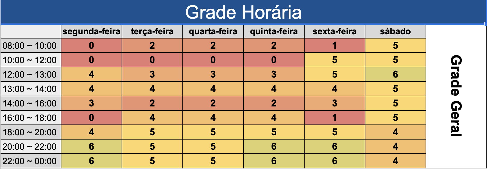

Heatmap
Versionamento
| Versão | Data | Modificação | Autor |
|---|---|---|---|
| 1.0 | 29/06/2022 | Criação Heatmap | Samuel Avila e Gabriel Sabanai |
Tabela 1: versionamento
Introdução
Para um melhor conhecimento da disponibilidade dos membros da equipe foi feito, por meio de um heatmap, o levantamento da disponibilidade de cada membro. O mapeamento foi realizado em blocos de 1 hora para facilitar o desenvolvimento geral do heatmap.
Metodologia
O Heatmap foi realizado utilizando o uma planilha no software web Google Planilhas, foi associado um numéro a cada membro da equipe para o preenchimento do readmap:
| Id | Nome |
|---|---|
| 1 | Gabriel Sabanai |
| 2 | Laís Ramos |
| 3 | Felipe Moura |
| 4 | Samuel Avila |
| 5 | Gabriel Mariano |
| 6 | André Alves |
Tabela 1: Id de cada membro
As cores do readmap estão relacionados a quantidade de membros disponiveis no horário:
Cores
| Quantidade | Cores |
|---|---|
| Nenhum membro | Vermelho |
| 1 membro | Vermelho claro |
| 2 membros | Laranja |
| 3 membros | Laranja claro |
| 4 membros | Amarelo escuro |
| 5 membros | Amarelo |
| Todos os membros | Amarelo esverdeado |
Tabela 2: Significado de cada cor
Todos os integrantes do grupo participaram de forma assíncrona colocando os horários que estavam disponíveis, e o artefato foi criado para que o grupo pusse saber o melhor dia e hora para se reunir semanalmente.
Resultados

Imagem 1: Heatmap de horários
Autor: Samuel Avila, Gabriel Sabanai